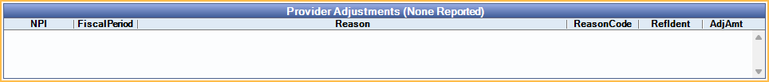

ERA
Use this window to process an ERA.
In the ERAs window, double-click on an ERA.

View ERA details, process ERAs, and finalize payment from this window. For instructions on processing ERAs, see ERA Workflow.
Payer/Payee Information
The top half of the window displays information about the payer (carrier) and payee (office/provider).

Raw Message: Opens the raw data of the electronic file sent by insurance. This is used for troubleshooting purposes.
- Copy All: Click to copy all text of raw message.
- Print: Click to print raw message.
Provider Adjustments
Provider adjustments display if any exist. Double-click a row to open a simple window that can be used to copy text.
Claims Paid
All claims in the ERA are listed under Claims Paid. Double-click a claim to manually Verify and Enter Payment. Open Dental attempts to automatically match claims to the ERA, if a match is not found, users may see the ERA Claim Select window instead when double-clicking.

Columns:
- Recd: Received status. X indicates the claim payment has been processed and claim marked received.
- Patient: Patient associated to the claim.
- DateService: Date of service of the associated claim.
- Claim Identifier: Claim Identifier Number.
- Payor Control#: Payor Control Number.
- Status: Claim type information (e.g., processed as primary).
- ClaimFee: Total claim fee billed.
- InsPaid: Total insurance claim payment.
- PatPort: Total patient portion.
- Deduct: Patient deductible.
- Writeoff: Insurance write-off.
Right-click options:
- Go to Account: View patient's account information.
- Add Tracking Status: Add a tracking status. See Track ERA for details.
Buttons
A number of actions can be taken using the buttons at the bottom.

- Detach Claim: Click to detach a claim. When a claim cannot be processed in the ERA window, or, after processing the Claim an X is still not showing in the Recd column, follow the Detaching a Claim steps on ERA Workflow.
- Find Claim Matches For Detached: Click to find claim matches for any detached claim (claims with a received status of N/A).
- EOB Claim Details: Highlight a claim and select to view a breakdown of the claim. See EOB Claim Details.
- Print: Click to print the ERA.
- To customize the printed ERA, see ERA Layout
- To customize the printed ERA header, see ERA Grid Header Layout
- Print Preview: Click to preview before printing.
- Auto Process: Click to receive payment for all claims on the ERA and finalize the batch insurance payment. A popup indicates how many claims were processed successfully, including any errors that need resolved. Correct any errors and click Auto Process again or receive claims manually as needed. For additional information see ERA Workflow.
- Finalize Payment: Once all claims are received, click to finalize the payment.
- Delete: Delete this ERA. All claims must be manually detached.
Finalize Payment
When every claim in the ERA is marked Received, click Finalize Payment.
- The Edit Insurance Payment opens. Most information is auto-populated. Enter or edit details as needed.
- If payment is paid via a prepaid insurance card and an integrated Credit Card Payment option is enabled, the corresponding payment buttons are shown. Click a button to process the payment. When the transaction is complete, the Edit Insurance Payment window remains open and transaction details show in the Note.
- Click Save to open the Insurance Payment (EOB) window.
- Verify that the correct claims are attached and the amount is accurate.
- Click Save again to finalize the payment.